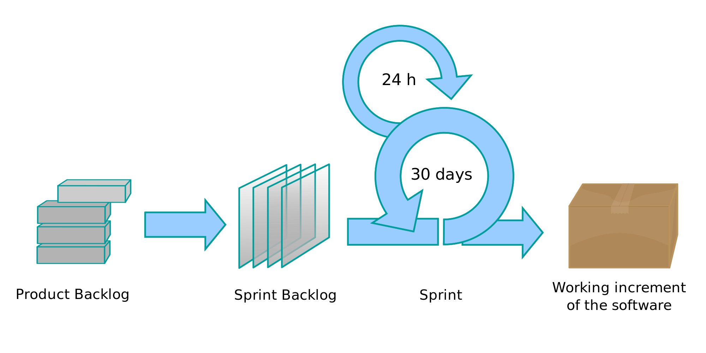

txts.github.io
So much to learn, so little time...
Software Engineeringbeginner, intermediary |
Automated SEadvanced, expert |
Dev Ops
the post-agile world |
||
|
The best thing for being sad,
(replied Merlin,
beginning to puff and blow) is to learn
something. That's the only thing that never
fails.
You may grow old and trembling in your
-- T.H. White, The Once and Future King |
||||
 anatomies, you may lie awake at night listening to
the disorder of your veins, you may miss your only
love, you may see the world about you devastated by
evil lunatics, or know your honour trampled in the
sewers of baser minds. There is only one thing for
it then- to learn.
Learn why the world wags and
what wags it. That is the only thing which the mind
can never exhaust, never alienate, never be tortured
by, never fear or distrust, and never dream of
regretting. Learning is the only thing for you.
Look
what a lot of things there are to learn.
anatomies, you may lie awake at night listening to
the disorder of your veins, you may miss your only
love, you may see the world about you devastated by
evil lunatics, or know your honour trampled in the
sewers of baser minds. There is only one thing for
it then- to learn.
Learn why the world wags and
what wags it. That is the only thing which the mind
can never exhaust, never alienate, never be tortured
by, never fear or distrust, and never dream of
regretting. Learning is the only thing for you.
Look
what a lot of things there are to learn.